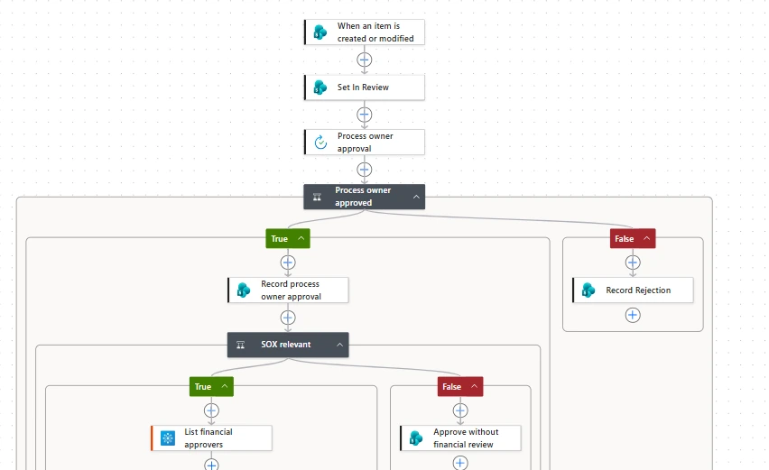
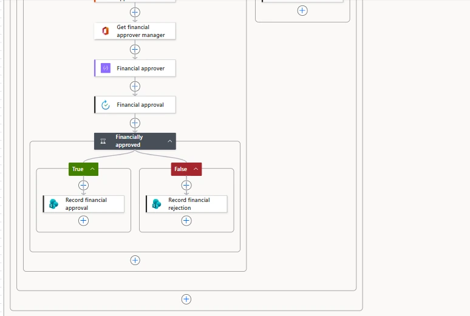
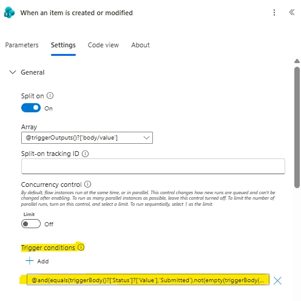
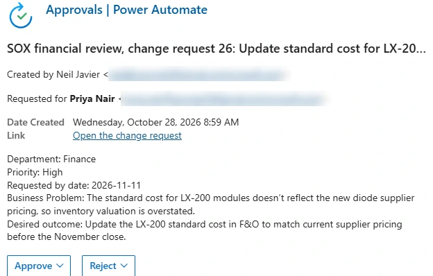
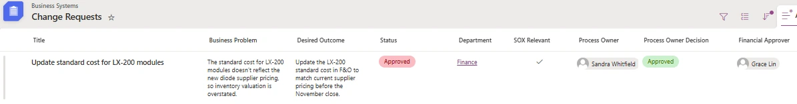
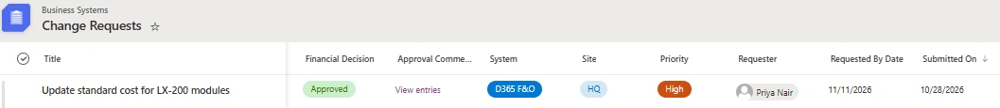
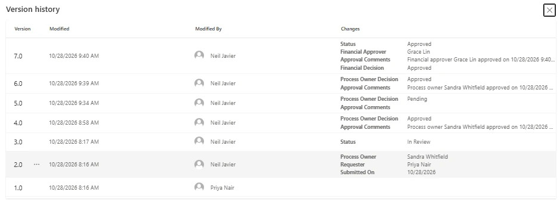

Power Automate · Approvals · SOX change control · Lumen Photonics lab
Approach highlighted
Routing by role, not by name. Every approver is looked up from data (the Departments list, an Entra group and the manager chain), so an org change never requires editing the flow, and segregation of duties is built into who gets asked.
Project Summary
Every change request at Lumen needs the department's process owner to approve it, and changes that touch the financial statements also need a financial review before anything is configured in Dynamics 365 Finance & Operations. This flow routes each request to the right people, records each decision and who made it, and writes the outcome back to the request.
| Step | Who approves | Where the flow finds them |
|---|---|---|
| 1. Process owner | The owner of the requesting department's process | The Process Owner column on the Departments list, set on the request by the enforcement flow |
| 2. Financial review (SOX relevant only) | The Controller | Membership of the SG-Financial-Approvers Entra group |
| Conflict | The financial approver's manager | Entra manager attribute, used if the financial approver requested the change or already approved it as process owner |


Starting at the Right Moment
Two flows act on a new request. The enforcement flow sets the process owner, so the approval flow must not start until that has happened, and it must start only once even though it updates the same request it triggers on. A trigger condition handles both: the flow runs only when the request is Submitted, has a process owner and has no decision yet. Its first action sets the status to In Review, so none of its own later updates match the condition again.
@and(
equals(triggerBody()?['Status']?['Value'], 'Submitted'),
not(empty(triggerBody()?['ProcessOwner'])),
equals(triggerBody()?['ProcessOwnerDecision']?['Value'], 'Pending')
)
Choosing the Financial Approver
The financial approver comes from group membership, so changing who reviews SOX changes is a group change in Entra, not a flow edit. The conflict rule keeps one person from approving twice or approving their own request:
// Normally the group member; their manager if they requested the change
// or already approved it as process owner
if(or(equals(toLower(member), toLower(requesterEmail)),
equals(toLower(member), toLower(processOwnerEmail))),
managerEmail,
member)Approvals are sent with reassignment turned off, because a one-click handoff to anyone would bypass the routing. Each approval links straight to the request, since approvers can't browse to the list.

Recording Who Decided
SharePoint's own approval features don't record who approved. The flow appends a line to an append-only Approval Comments column for every decision, with the approver's name, the time in Pacific time and their comment, and sets the Financial Approver column.
concat('Financial approver ',
first(outputs('Financial_approval')?['body/responses'])?['responder']?['displayName'],
' approved on ',
convertFromUtc(utcNow(), 'Pacific Standard Time', 'MM/dd/yyyy h:mm tt'),
': ',
coalesce(first(outputs('Financial_approval')?['body/responses'])?['comments'], 'No comment'))Two rules apply to every update the flow makes. SOX Relevant always passes through from the request, because the designer fills it with a default and a hard-coded Yes would silently undo a triage decision. And a decision is never written back to Pending once it has been made.
Testing It End to End
A cost accountant submitted a Finance change request. The enforcement flow set the CFO as process owner, the CFO approved, and the flow sent the SOX review to the Controller, who approved. The request finished Approved, with both decisions and the financial approver recorded.


Version history tells the whole story: the requester submits, the enforcement flow sets the process owner and requester, the approval flow moves it to In Review, the CFO approves, and the Controller's approval releases it. The first run failed after the CFO approved because of a typo in a condition; the history shows the fix and the restart, because nothing is hidden.

What Testing Found, and What's Next
Skills Demonstrated
Power Automate approvals, trigger conditions, multi-stage approval routing, nested conditions, Office 365 Groups and Users connectors, workflow expressions, SharePoint list updates, SOX-aligned segregation of duties, end-to-end testing as multiple users, and reading version history as an audit trail.
More from the Lumen Photonics lab